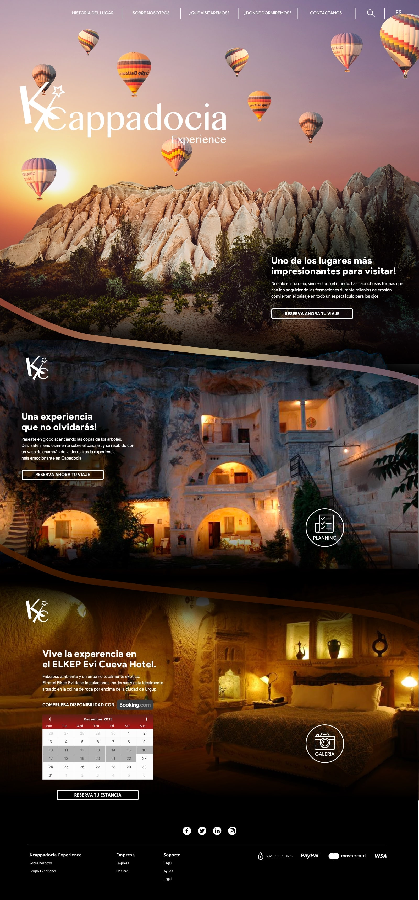

Kcappadocia Experience - Diseño de una landing page para una destinación turistica.
Cappadocia es un lugar único en el planeta, estático por sus construcciones de piedra pero lleno de vida con sus visitantes y excursiones en globo que llenan de vida y color los cielos en los amaneceres por encima de las formaciones naturales mas curiosas. Kcappadocia Experience es una agencia de viajes especializada que ofrece la organización y planificación completa de un viaje a este destino.
En este diseño de landing page para Kcappadocia Experience, quise reflejar esos dos aspectos del lugar: tanto la naturaleza estática y seca, como el movimiento presente en el valle en cuanto se eleva el sol. La exploración de la landing page según sus etapas va guiando al usuario con sorpresas, interacciones simulando que se adentra en el lugar.
●
